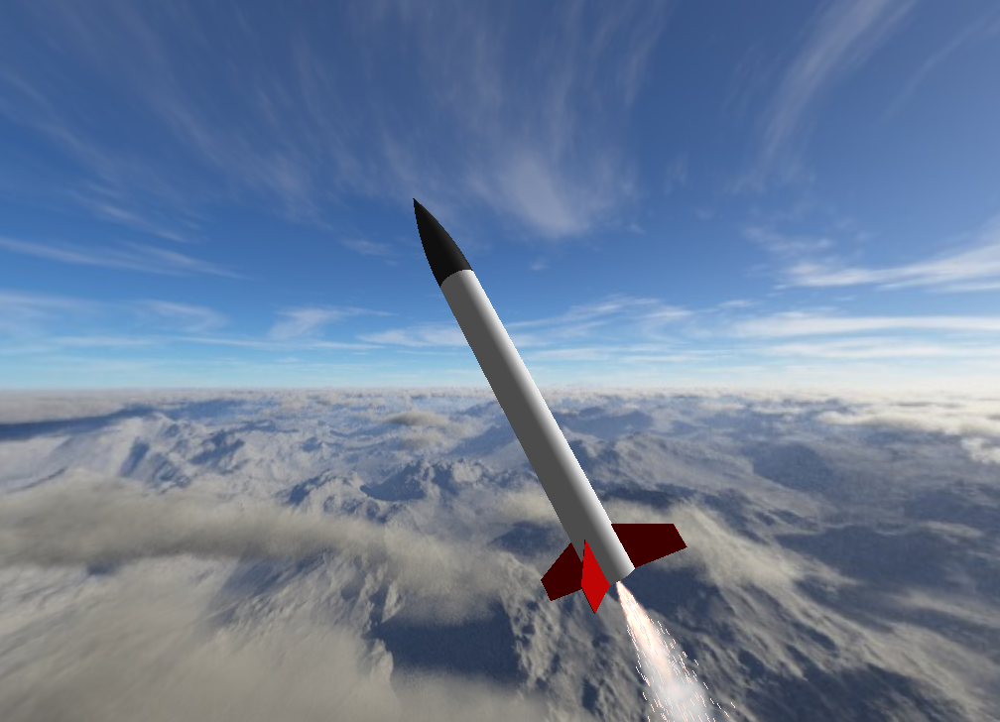

Els nostres Coets
Dissenys propis impresos en 3D i optimitzats per a les condicions del Pallars.

En Proves
Minairó-1
Primer model que consta de 3 peçes modulars.
- Pes: 150g
- Material: PLA
- Propulsió: Aigua / Aire comprimit
- Objetiu: Enlairament i Recuperació